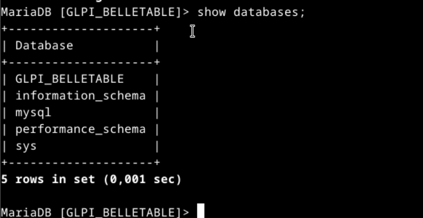
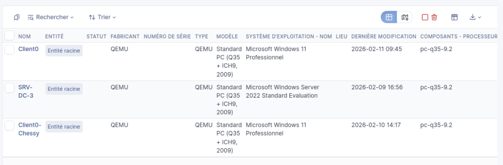

3. Configuration BDD
Base dédiée GLPI. Utilisateur SQL sécurisé. mysql_secure_installation.
Déploiement complet d'une solution de gestion de parc basée sur GLPI. Infrastructure fonctionnelle, sécurisée et administrable.
Base dédiée GLPI. Utilisateur SQL sécurisé. mysql_secure_installation.

Auth centralisée via LDAP. Config DN, serveur LDAP, filtres. Correction erreurs de bind.

Dump MariaDB via mysqldump. Sauvegarde glpi_backup.sql. Vérification intégrité.
Environnement fonctionnel. Connexion LDAP, tickets, consultation du parc opérationnels.